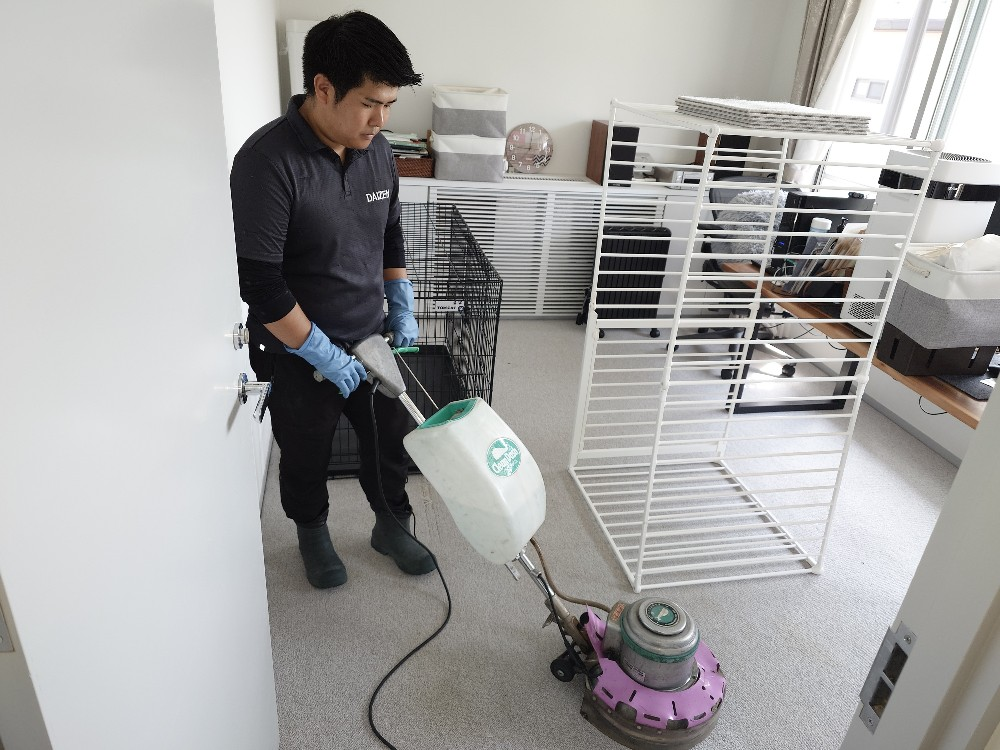
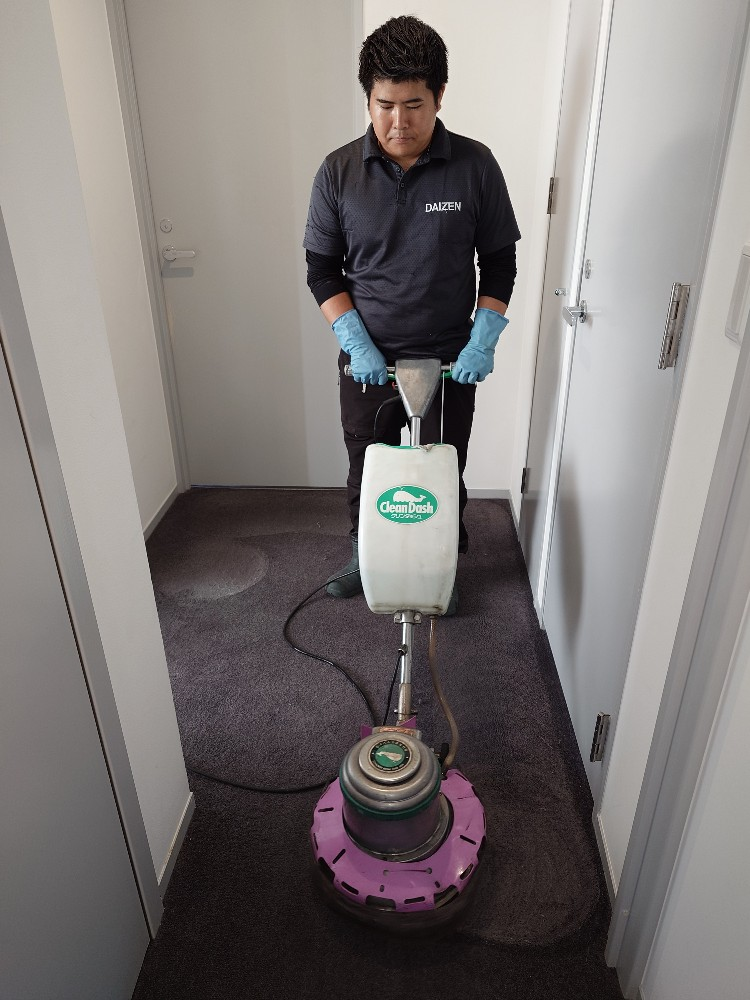
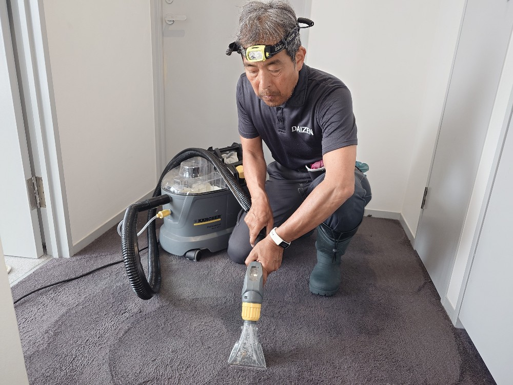
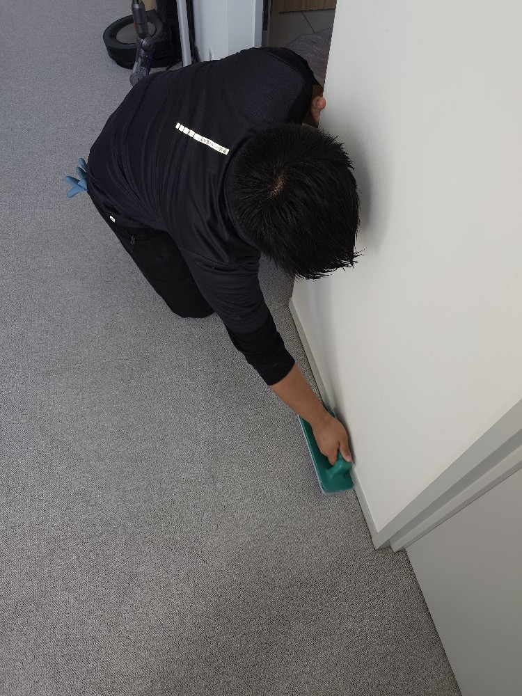
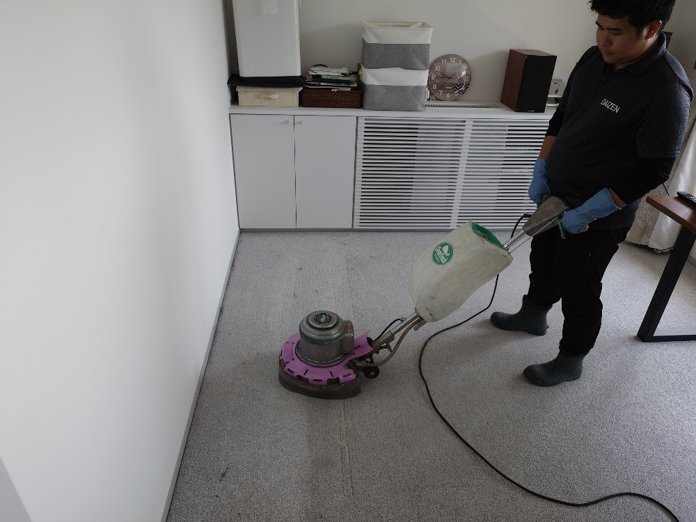
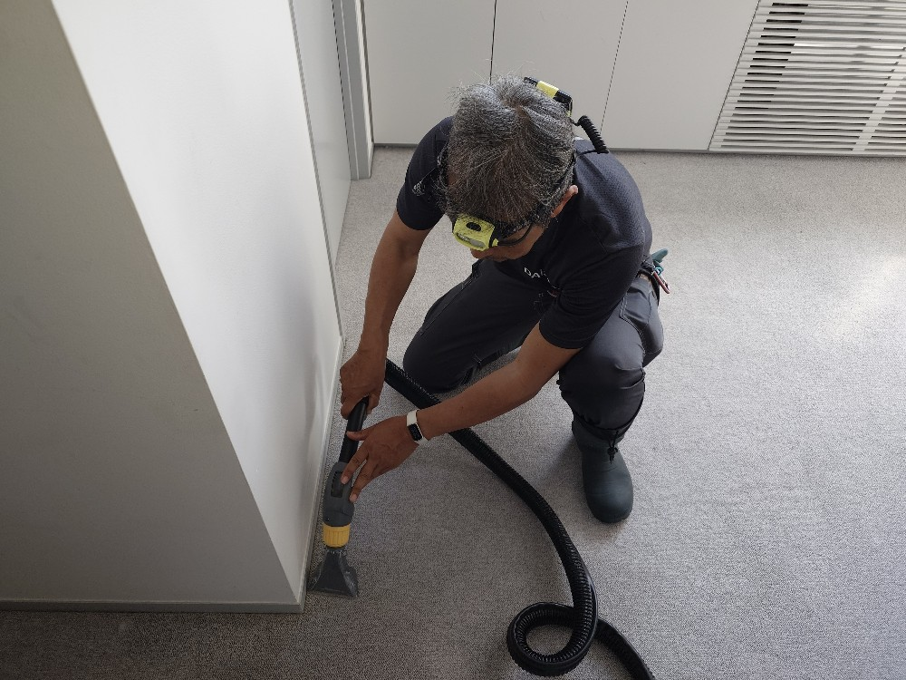
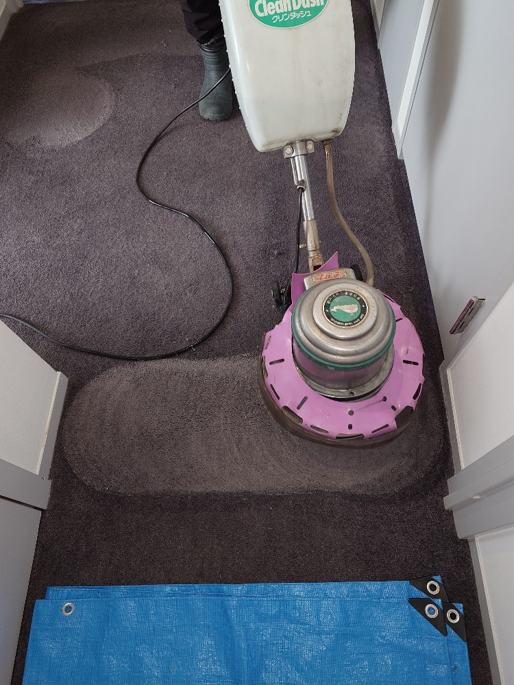
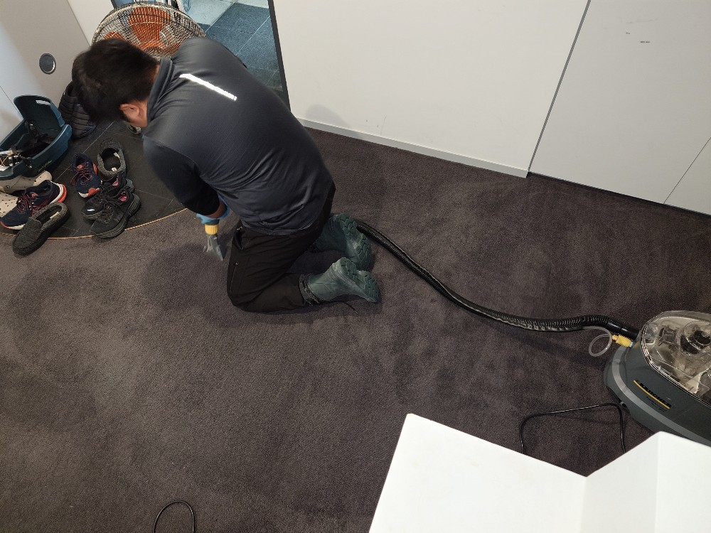
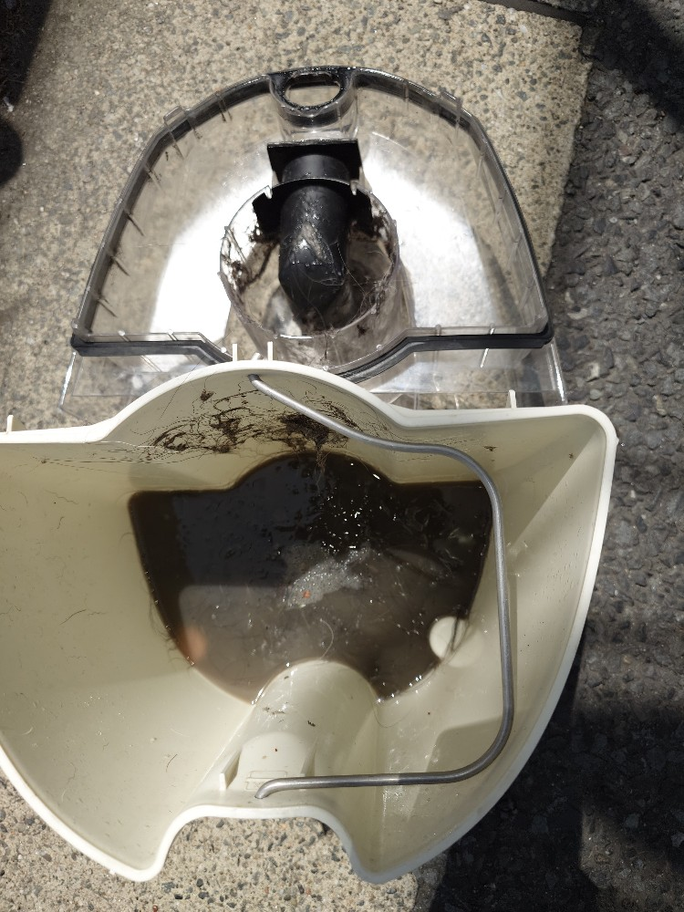
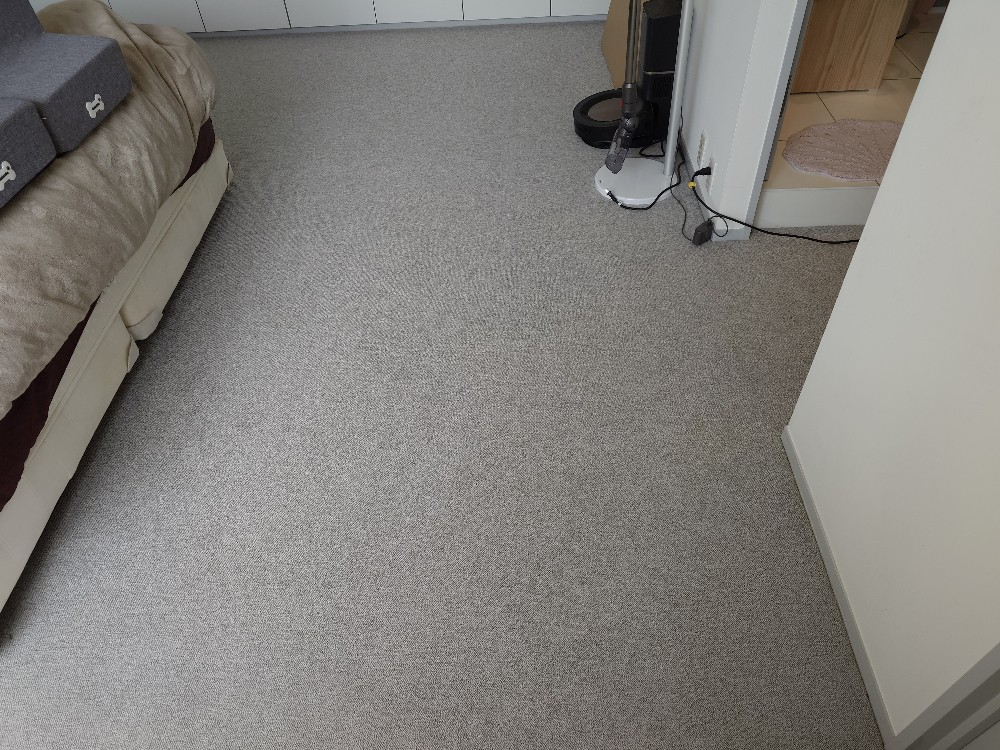

目黒区碑文谷 Kさんご自宅カーペット洗浄クリーニング（ワンちゃん）を実施しました!

目黒区碑文谷 K様ご自宅のカーペット洗浄クリーニングをしました!K様宅にはとても可愛い2頭のワンちゃんがいます、K様のお悩みは3階入口のカーペットのワンちゃんのおしっこ跡、2階のお部屋、寝室、入口と通路のワンちゃんのおしっこ跡、気になるにおいがカーペットに付いていることと伺いましたので、それら気になるカーペット汚れ跡、カーペットの隅のホコリ汚れ、ワンちゃんの毛の着いた各所、気になるにおいの所は特に重点的に何度も繰り返し、カーペット洗浄専用薬剤を塗布して、カーペットポリッシャーで充分洗浄クリーニングを掛けて、その上でカーペット洗浄専用リンサー機器で除菌洗浄バキュームクリーニングを実施しました!ワンちゃん、汚れ跡ももちろんですが、カーペットの内部に堆積したホコリ汚れ、隅の細かい堆積汚れ、付着したワンちゃんの毛など、隅々まで洗浄バキュームクリーニングしましたので、スッキリ感が蘇りました!K様も、カーペットの上を歩くとふかふかして気持ち良いと喜んで下さいました!ワンちゃん、猫ちゃんのおしっこ汚れ、毛の除去、ダニ除去、ホコリ汚れ除去、除菌クリーニング、コーヒーのこぼし跡、食べ物や飲み物のこぼし跡など、すぐに駆けつけてクリーニング出来ます!ぜひお問い合わせ下さい、宜しくお願いいたします!








